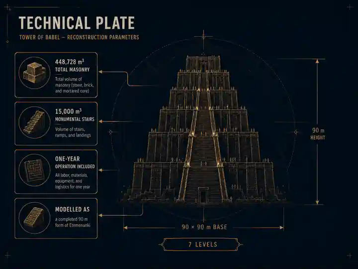
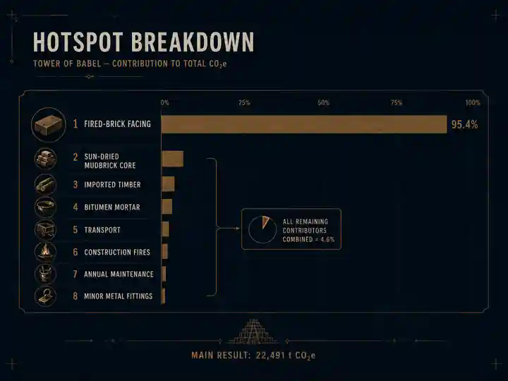

EPISODE #36 · MYTH & LEGENDS
The Tower of Babel
What would it take — in carbon — to build a tower meant to reach the heavens?
THE SUBJECT
Architecture against the sky.
The Tower of Babel is reconstructed as a completed 90 m form of Etemenanki, Babylon's great seven-stage ziggurat. The footprint is historically anchored, while upper tiers, shell thickness and stair volume remain explicit engineering assumptions.
Geometry
90 × 90 m square base, 90 m total height and seven stages including the summit sanctuary.
Masonry
448,728 m³ total masonry, including 15,000 m³ allocated to the monumental approach stairs.
Material logic
88.4% of masonry volume is sun-dried mudbrick core; 11.6% is fired masonry and bitumen facing.
Main hotspot
The fired-brick skin contributes 95.4% of the complete one-year footprint.
VISUAL MODEL
Architecture becomes inventory
A compact visual reconstruction of the material system and the geometry used to turn the myth into an auditable model.

LIFE CYCLE INVENTORY
The material mountain
The tower is mostly earth by volume. Its climate burden is dominated by the material that required fire.
| Stage | Component / activity | Activity data | Climate change | Modelling basis |
|---|---|---|---|---|
| Construction | Sun-dried mudbrick core | 396,837 m³ / ~476,204 t | 45.4 t CO₂e | Manual on-site adobe production analogue |
| Construction | Fired-brick facing | 88,734 t | 21,456.1 t CO₂e | DEFRA 2026 fired-brick proxy |
| Construction | Natural bitumen mortar | 5,345 t | 209.6 t CO₂e | DEFRA asphalt proxy |
| Construction | Cedar & other timber | 1,500 t | 404.3 t CO₂e | Generic wood proxy |
| Construction | Metal fittings & tools | 50 t | 191.1 t CO₂e | Average metals proxy |
| Construction | Process water | 119,051 m³ | 0 t CO₂e modelled | River/canal supply assumed gravity/manual |
| Construction | Fired-brick transport | 443,668 t·km | 56.4 t CO₂e | Road transport direct + WTT proxy |
| Construction | Bitumen transport | 1,068,955 t·km | 18.5 t CO₂e | Small cargo vessel direct + WTT proxy |
| Construction | Timber transport | 1,200,000 t·km | 20.7 t CO₂e | Small cargo vessel direct + WTT proxy |
| Construction | Metals transport | 5,000 t·km | 0.6 t CO₂e | Road transport proxy |
| Construction | Construction fires | 500 t wood logs | 50.4 t CO₂e | Bitumen heating, food preparation and site fires |
| Maintenance | Annual repairs | 992 m³ mudbrick + 88.7 t fired brick + 53.4 t bitumen + 30 t timber + 0.5 t metals | 35.9 t CO₂e | Annual engineering maintenance assumptions |
| Operation | Annual ceremonial fires | 20 t wood logs | 2.02 t CO₂e | Biogenic CO₂ disclosed separately |
Included
Mudbrick core, fired-brick facing, bitumen mortar, timber, metals, material transport, construction fires, one year of repairs and ceremonial fires.
Excluded / separate
Human labour, food, animal metabolism, divine intervention and language confusion are excluded. Biogenic CO₂ from wood combustion is disclosed separately.
The supernatural rule
Magic is not a fuel. No emissions are assigned unless a physical flow can be reconstructed.
HOTSPOT
The burden is in the fire
Almost the entire climate burden sits in the fired-brick skin, while the immense sun-dried core remains comparatively light.

Fired-brick facing
21,456.1 t CO₂e
95.4% of the total result.
Other construction
~997 t CO₂e
Bitumen, timber, metals, transport, fires and mudbrick combined.
Annual maintenance + operation
37.9 t CO₂e
Repairs plus one year of auxiliary fires.
Separate disclosure
746.8 t biogenic CO₂
Reported outside the main GWP result.
100-year sensitivity
Spreading construction across a 100-year service life reduces the annualised result to about 262 t CO₂e/year, 98.8% below the main FU.
Largest limitation
A high-carbon kiln factor raises the result to about 123,495 t CO₂e. The kiln assumption is therefore the dominant sensitivity.
Key interpretation
The sun-dried core holds almost nine tenths of the masonry volume, yet the fired-brick skin carries almost the entire climate burden.
Full carousel
THE VERDICT
They tried to give one language to the sky.
The kilns answered first.
The words were scattered.
The carbon stayed.